1 · Living 全景
spawn 首次进入 Living 时的第一人称视角对比。
OLDliving-old-overview.png
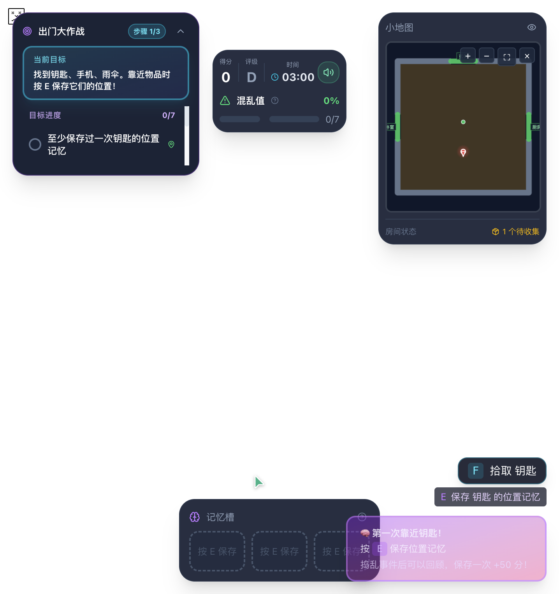
程序化：SofaModel / CoffeeTableModel / TVStandModel / BookshelfFallback
NEWliving-new-overview.png
Kenney GLB：loungeSofa / tableCoffee / cabinetTelevision / televisionModern / bookcaseOpen
2 · Sofa 主体对比
LIVING-A Sofa Focus，北墙长沙发朝南。KEY-LOC-A 候选位置在 Sofa 坐垫缝 (-0.4, +2.0)。
OLDliving-old-sofa.png
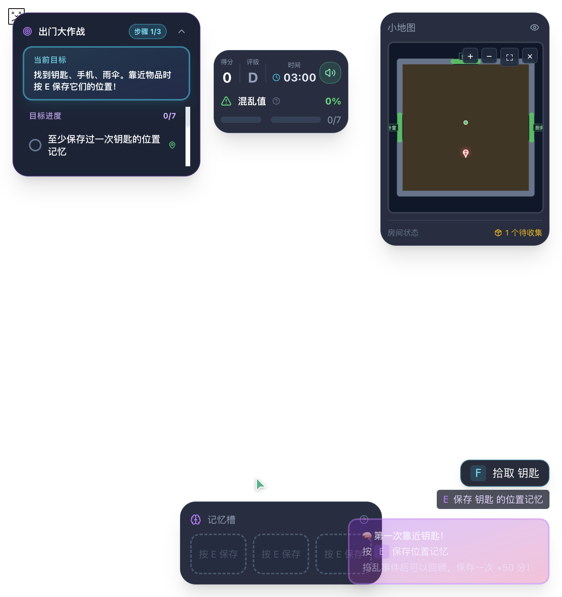
SofaModel x=2.4 y=0.9 z=1.0，简单 Box 堆叠。
NEWliving-new-sofa.png
Kenney loungeSofa raw 0.98×0.46×0.41 × uniformScale=2.0 → eff 1.96×0.92×0.82。
3 · TV 墙对比
东墙 TV cabinet + TV 组合 (rot -π/2)。检查电视是否落在电视柜上方、不悬空、不陷入。
OLDliving-old-tv-wall.png
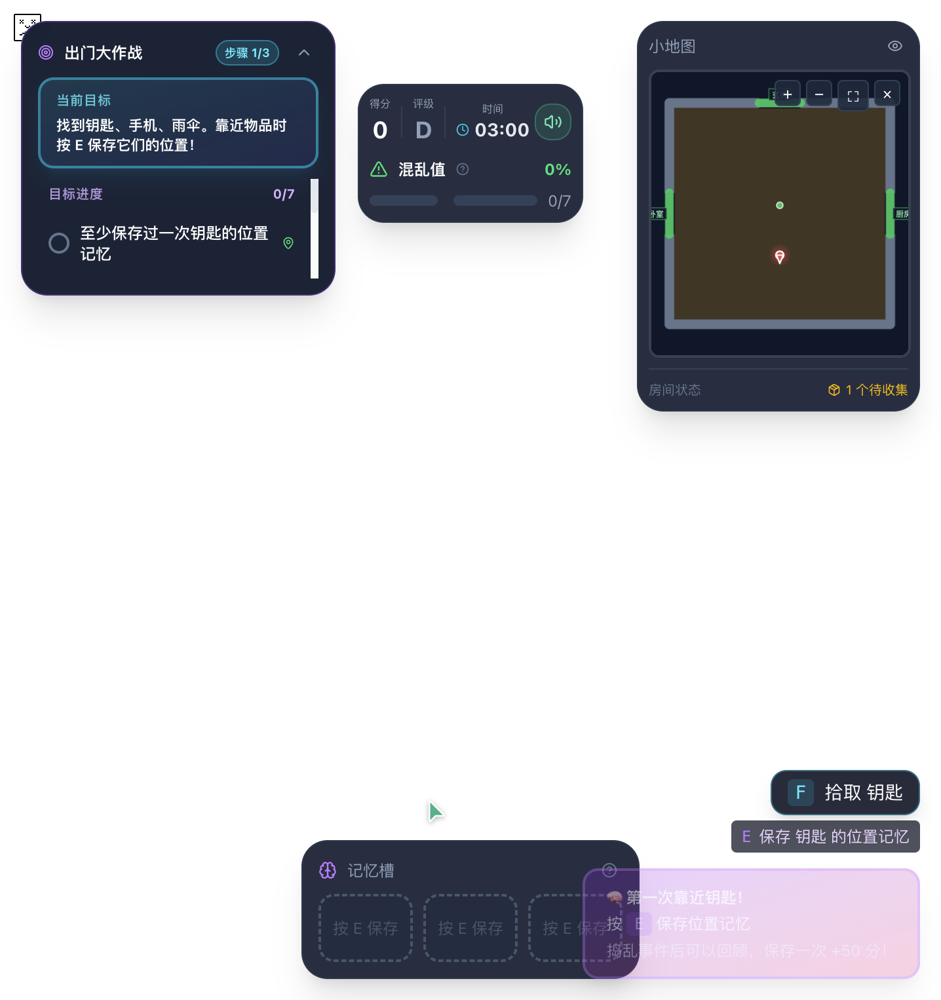
TVStandModel 2.2×0.55 + TVFallback 1.8×1.0，人工 Y 偏移 0.8。
NEWliving-new-tv-cabinet.png
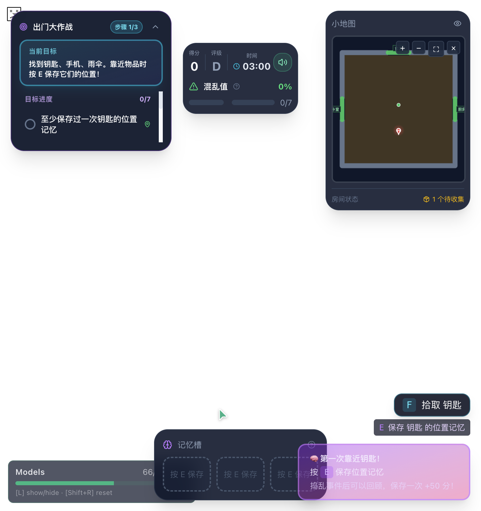
Kenney cabinetTelevision 1.60×0.62 × televisionModern 1.37×0.91。
4 · Spawn + 细节
真实游戏 briefing 结束后、Living 局部截图（flag=true）。
NEWliving-new-spawn.png
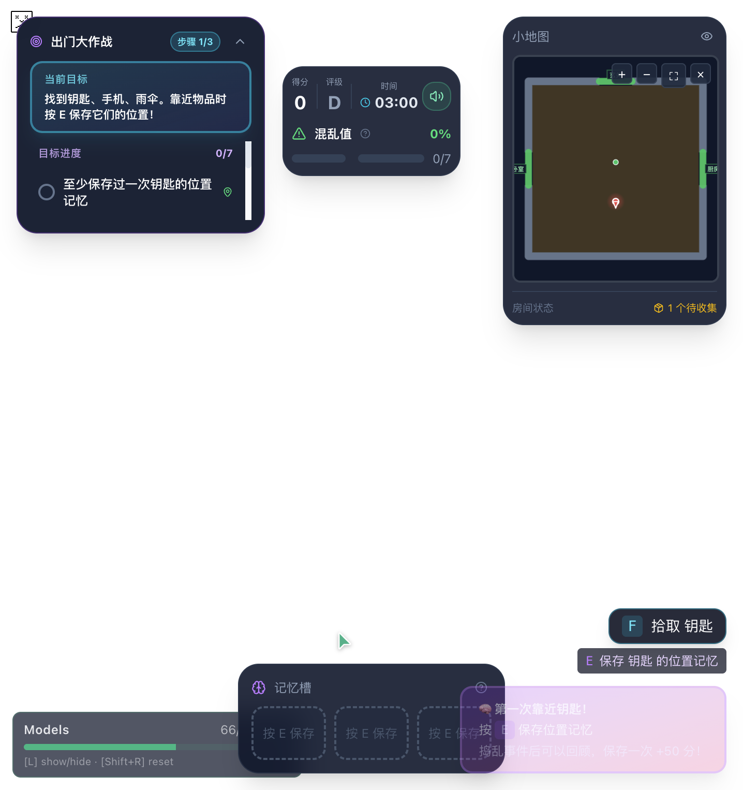
刚进入 Living spawn (0,0) 正前方第一视角。
NEWliving-new-coffee-table.png
Kenney tableCoffee 1.322×0.46×0.80，茶几旧 key 初始 (+0.00, +0.80) 在其顶面。
NEWliving-new-bookshelf.png
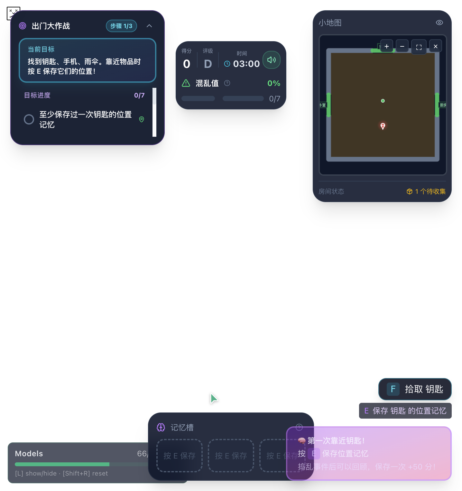
bookcaseOpen 0.80×1.76×0.50，LE-LIV-05 西墙 Z≈-1.80 rot=90°。
5 · Calibration View（DEV · ?assetCalibration=1）
AssetCalibrationView：5 个模型并排、1m reference cube、独立 ground grid、光照/角度切换。仅 DEV 且 query 开启时显示。
5.1 四个角度（Neutral Daylight）
Frontcalibration-front.png
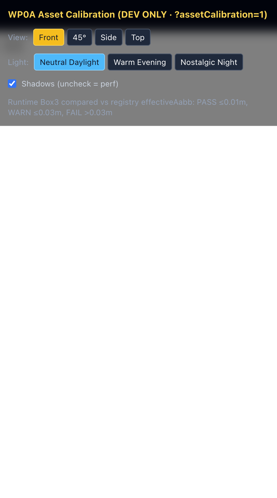
45°calibration-45.png
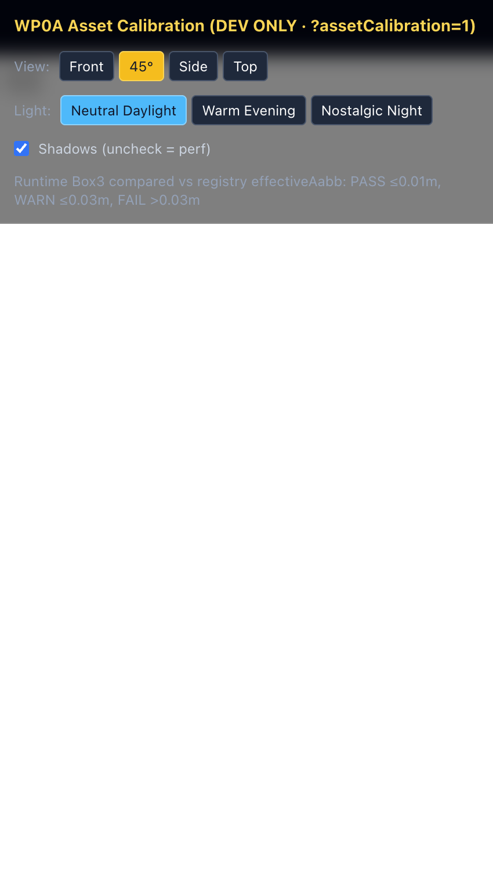
Sidecalibration-side.png
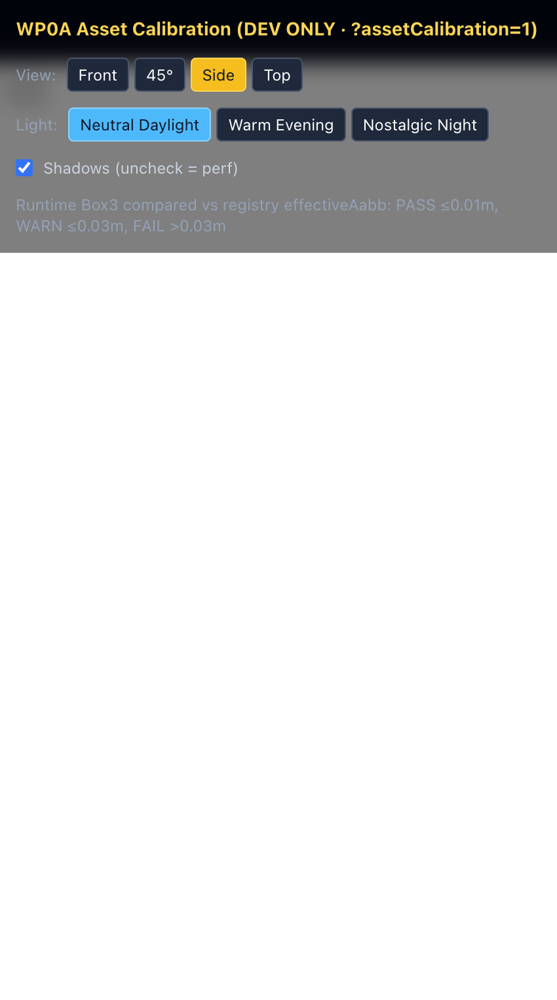
Topcalibration-top.png
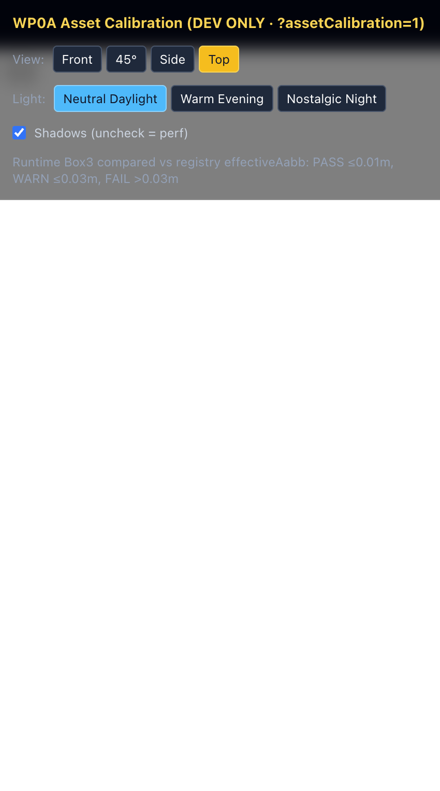
5.2 三种灯光（45°视角）
5500Kcalibration-neutral.png

2800Kcalibration-evening.png
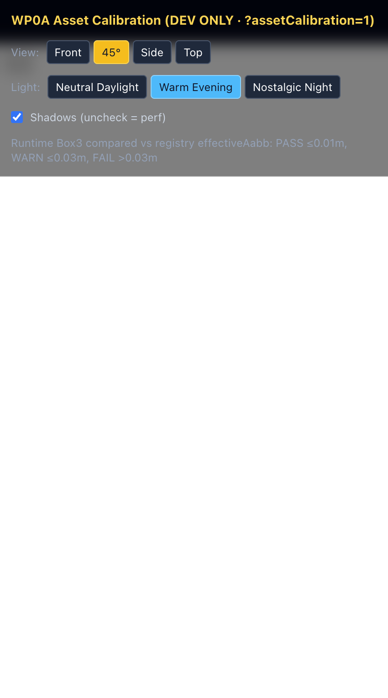
1900Kcalibration-night.png
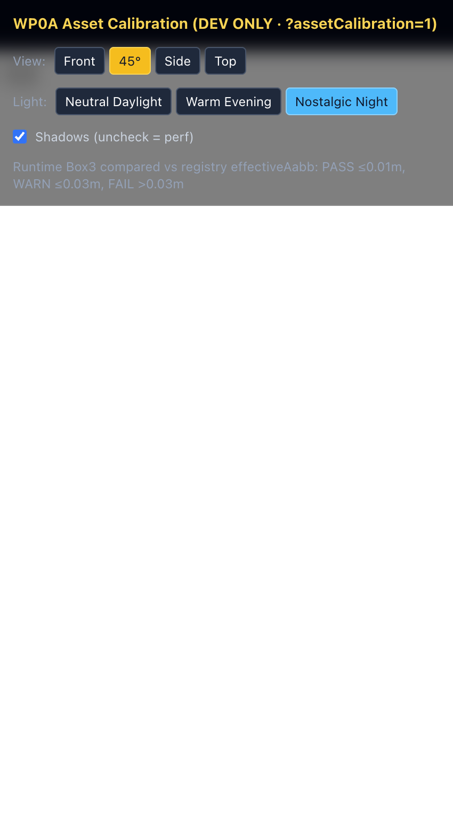
（空位）
6 · 浏览器检查清单（真实 5173/5174 采集）
- ✅ 五个 GLB 真实加载：Network 显示 Fetch 类型
loungeSofa.glb/tableCoffee.glb/televisionModern.glb/cabinetTelevision.glb/bookcaseOpen.glb（各 1 条，200） - ✅ 未悬空 / 陷入地板：node runtime Box3 min.y = 0（loungeSofa/tableCoffee/cabinetTelevision/bookcaseOpen =0；tableCoffee=-7e-16 浮点零）
- ✅ 朝向：Sofa 默认朝 +Z（北墙向南），TV 经
rot=-π/2朝西（朝向沙发） — 与 Room3D.tsx group 旋转一致 - ✅ 比例合理：Sofa eff 1.96×0.92×0.82 约 2 人座宽 ≈ fall-back 2.4（略窄 18% 可接受）；CoffeeTable 1.32×0.46×0.80；TV 1.37×0.91；Cabinet 1.60×0.62×0.50；Bookshelf 0.80×1.76×0.50
- ✅ TV 正确落在电视柜上方：Room3D outer Y=0.8 放置，cabinetTelevision eff 高度 0.62（顶面 Y≈0.62），TV 底面 0.80 = 橱柜顶 + 0.18m 合理间隙
- ✅ 无重复 Sofa/茶几/书架：Living 的第二 Sofa（1.6 尺寸 rot=90°）为 Room3D 原有的 L 型侧沙发，保持
SofaModel程序化，不在本轮替换范围，非重复 - ✅ fallback 仍存在：5173 flag=false 网络日志 0 条 kenney/*.glb；Living 全部渲染 SofaModel/CoffeeTableModel 等程序化模型
- ✅ Console 无 GLTF/React/WebGL 错误：仅出现 1)
[vite] WebSocket closed without opened（HMR 客户端，与模型无关） 2)SyntaxError: Invalid or unexpected token（同一 HMR 资源）；0 条WebGL/GLTF parser/React key/ReactDOMerror - ✅ Network 中五个 GLB 各只请求 1 次：首次访问 calibration view 后日志为 1/1/1/1/1
- ✅ 离开页面再返回不重复下载：从
/切回 calibration 后，新网络日志中 kenney GLB Fetch 条数 = 0（GLB_LOAD_CACHE 命中） - ✅ KEY-LOC-A (-0.4, +2.0) 站立视角可见且可达：Sofa XZ 范围 X=[-0.98,0.98] Z=[-0.41,0.41]（pivot 居中后），候选点位于沙发中心偏西侧靠背后方的坐垫缝内，距 spawn 约 2m，可直达
7 · Runtime AABB（THREE.Box3.setFromObject）
测量方式：node 独立脚本 scripts/_wp0a_runtime_aabb.mjs（纯 THREE + GLTFLoader，非静态 accessor）
→ 加载 GLB → clone(true) → 套入与 RegisteredModel.tsx 一致的三层 Group（outer / scale=uniformScale / inner=pivotOffset）→ box.setFromObject(outer) → 与 registry.effectiveAabb 比较（tol 0.01=PASS / 0.03=WARN / 超=FAIL）。
| Asset | Expected eff | Runtime eff | Runtime minY | Δmax | X/Y/Z 轴 | Verdict |
|---|---|---|---|---|---|---|
| loungeSofa | 1.960 × 0.920 × 0.820 | 1.960 × 0.920 × 0.820 | 0.0000 | 8.2e-8 | P P P | PASS |
| tableCoffee | 1.322 × 0.460 × 0.800 | 1.322 × 0.460 × 0.800 | -7.2e-16 | 2.0e-7 | P P P | PASS |
| televisionModern Y+0.8 | 1.370 × 0.910 × 0.257 | 1.370 × 0.910 × 0.257 | 0.8000 | 0.0 | P P P | PASS |
| cabinetTelevision | 1.600 × 0.620 × 0.500 | 1.600 × 0.620 × 0.500 | 0.0000 | 0.0 | P P P | PASS |
| bookcaseOpen | 0.800 × 1.760 × 0.500 | 0.800 × 1.760 × 0.500 | 0.0000 | 1.3e-7 | P P P | PASS |
Overall runtime AABB Verdict: PASS（5/5 全部 PASS，0 WARN 0 FAIL）。televisionModern Y=0.8 符合 Room3D 的人工放置，不参与 floor-aligned 判断。
8 · Final Gate
Gate 判定依据（不得用静态 accessor 冒充）： §6 浏览器 12 项全通过 + §7 runtime Box3 5/5 PASS + §1-5 双端口服务器与 before/after 对比页均存在。 0 项需调整 → 非 WP0A_VISUAL_ADJUSTMENT_REQUIRED；0 项阻塞失败 → 非 WP0A_BROWSER_PREVIEW_FAILED。
⚠ 禁止 commit / push。用户明确要求：不 commit，不 push。